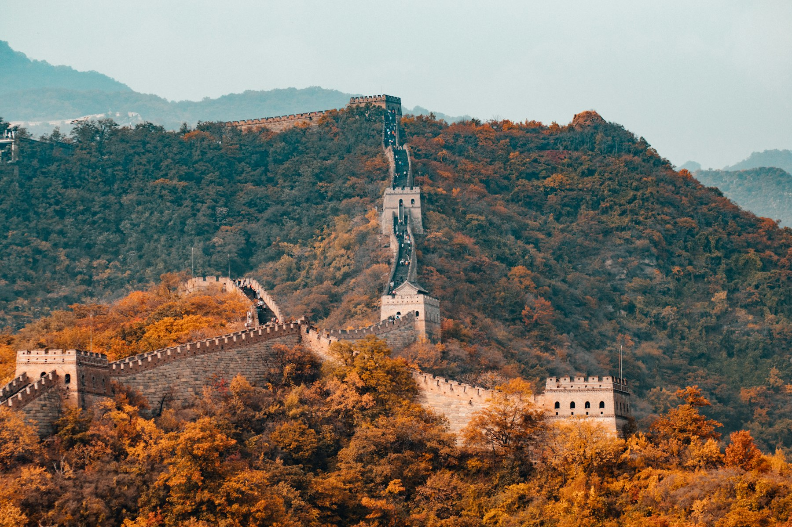

山西
想省心省钱看震撼古迹就选它。动车直达 4.5 小时、¥220，下车就是宋构五代木建、彩塑、世遗古城。代价：美食偏主食，10 月初早晚 5–10℃ 要带薄羽绒。

一句话结论
山西 ≥ 武汉-长沙 > 福州-泉州 > 成都-重庆
成渝垫底不是因为它不好，而是「十一 + 淄博出发」这个组合对它最不利（必须飞、机票溢价、人流全国顶流）。换个非节假日的周末飞过去吃，它就是第一名。
打分表 · 10 分制
美食维度权重 ×2。分高 = 更适合这次行程。
| 维度 | 山西 | 武汉-长沙 | 福州-泉州 | 成都-重庆 |
|---|---|---|---|---|
| 交通便利（淄博出发） | 10 · 直达动车 4–4.5h / ¥220 | 7.5 · 直达武汉 6h / ¥530 | 6 · 高铁换乘 8–9.5h | 6 · 需去济南飞 |
| 美食密度 ×2 | 7 · 面食醋宇宙 | 9 · 过早+湘菜+茶颜 | 8.5 · 闽菜+泉州小吃 | 10 · 火锅川菜天花板 |
| 历史古迹 | 10 · 晋祠/平遥/双林寺 | 8 · 两大省博国宝 | 8 · 世遗泉州 | 6.5 · 武侯祠/草堂 |
| 自然风光 | 6.5 · 城墙日落 | 7.5 · 东湖/岳麓山 | 8 · 鼓山/清源山 | 7 · 熊猫+山城夜景 |
| 十一人流（高=松） | 6 · 平遥很挤 | 5.5 · 长沙顶流 | 7.5 · 相对温和 | 5 · 洪崖洞/熊猫顶流 |
| 预算友好 | 9 · 两人约 ¥5k | 8 · 约 ¥6.5–7k | 7.5 · 约 ¥7k | 6 · 约 ¥8k+ |
| 加权总分 | 7.9 | 7.8 | 7.7 | 7.4 |
适合谁
想省心省钱看震撼古迹就选它。动车直达 4.5 小时、¥220，下车就是宋构五代木建、彩塑、世遗古城。代价：美食偏主食，10 月初早晚 5–10℃ 要带薄羽绒。
想吃得爽且内容丰富选它。过早 + 湘菜 + 夜宵密度极高，曾侯乙编钟和马王堆都是真·国宝。代价：长沙十一人流顶流，天气可能 30℃+，湘博要拼手速。
想要最舒服均衡选它。天气最好、人流相对温和、小吃密度高、世遗古城适合慢逛。代价：路上花时间（单程 8–9.5h），古迹冲击力不如山西直接。
美食最强但十一最不划算。火锅川菜天花板无疑，但机票翻倍、景点人挤人、盆地多阴雨。建议留给普通周末，3 天飞一趟专门吃。
无论选哪个